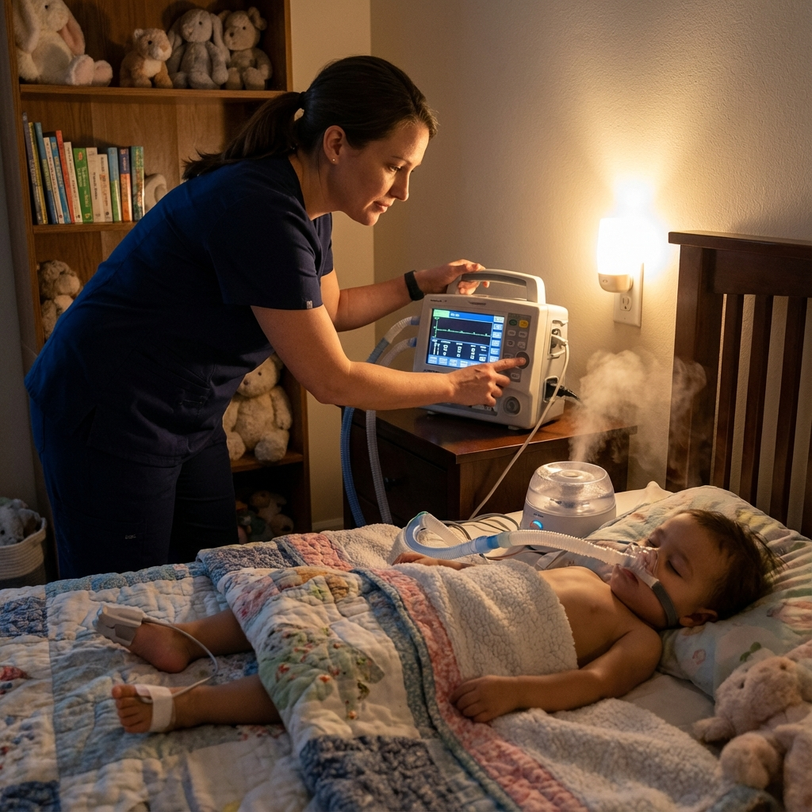
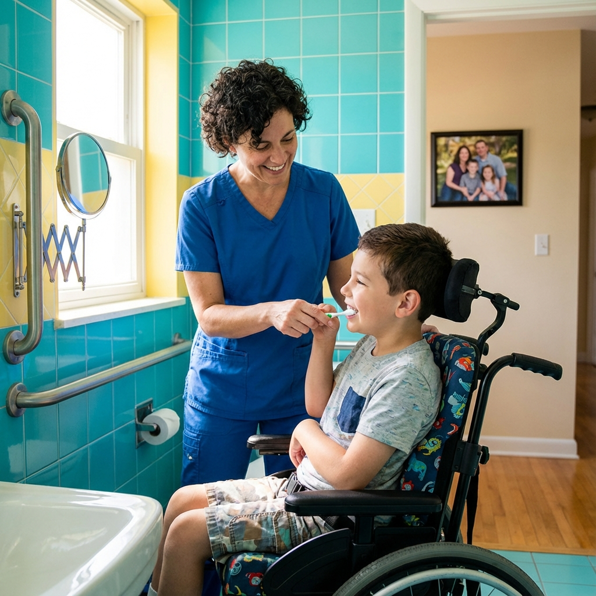

Servicios integrales de atención domiciliaria
Atención de enfermería pediátrica a nivel hospitalaria brindada en la calidez y comodidad de su hogar: 100 % cubierta por Medicaid de Georgia para niños menores de 21 años.
Soporte respiratorio
Atención experta para niños con necesidades respiratorias complejas
Para los niños que dependen de equipos respiratorios para respirar, cada momento importa. Nuestras enfermeras son especialmente entrenado en cuidado respiratorio pediátrico, asegurando que su hijo reciba atención seguimiento y respuesta inmediata ante cualquier cambio en su estado respiratorio.
Nuestros servicios de soporte respiratorio incluyen:
- Cuidado de la traqueotomía: Manejo completo de la traqueostomía, incluida la succión, el cuidado del estoma y el tubo. cambios y respuesta de emergencia
- Manejo del ventilador: Monitoreo las 24 horas del día, los 7 días de la semana de niños que dependen de un respirador, incluido Mantenimiento del circuito, respuesta de alarma y protocolos de desconexión según lo ordenado por los médicos.
- Terapia de oxígeno: Administración y monitorización de oxígeno suplementario vía nasal. cánula, mascarilla o collarín traqueal
- Monitoreo de oximetría de pulso: Monitoreo continuo o puntual de la saturación de oxígeno con protocolos de intervención inmediata
- Tratamientos con nebulizador: Administración de medicamentos respiratorios recetados.
- Fisioterapia torácica: Técnicas de limpieza de las vías respiratorias para prevenir complicaciones
Nuestras enfermeras capacitadas en respiración comprenden que los padres necesitan más que atención clínica. experiencia: necesitan tranquilidad. Brindamos educación exhaustiva para que comprenda el equipo de su hijo. y puede responder con confianza entre turnos de enfermería.
Descubra si su hijo califica
Servicios de enfermería especializada
Enfermeras autorizadas que brindan atención de calidad hospitalaria en el hogar
Nuestro equipo de Enfermeras registradas (RN) y enfermeras prácticas autorizadas (LPN) trae avanzado habilidades clínicas directamente a la cabecera de su hijo. Si su hijo requiere atención médica compleja intervenciones o un seguimiento cuidadoso, nuestras enfermeras están equipadas para brindar el más alto nivel de atención.
Los servicios de enfermería especializada incluyen:
- Evaluaciones Integrales de Salud: Evaluaciones periódicas del estado general de su hijo. Salud, crecimiento y progreso del desarrollo.
- Cuidado de heridas: Cambios de apósitos estériles, medición y documentación de heridas, infección. Prevención y optimización de la curación.
- Terapia intravenosa (IV): Cuando se prescribe, la administración y el seguimiento de la vía intravenosa medicamentos y liquidos
- Cuidado de la vía central: Mantenimiento, lavado y cambios de vendajes para líneas PICC, puertos y otros dispositivos de acceso venoso central
- Monitoreo y respuesta a las convulsiones: Observación, documentación y emergencia. Intervención para niños con trastornos convulsivos.
- Atención posquirúrgica: Apoyo de enfermería especializada durante la recuperación de procedimientos quirúrgicos
- Coordinación de atención: Comunicación con médicos, terapeutas y otros miembros del el equipo de atención médica de su hijo
Cada enfermera de nuestro equipo ha completado una formación especializada en hogar pediátrico salud y mantiene certificaciones actualizadas en RCP, primeros auxilios y emergencias pediátricas. respuesta.
Descubra si su hijo calificaAsistencia de cuidado personal
Apoyo compasivo para las actividades de la vida diaria
Para niños que necesitan ayuda con las actividades diarias pero que tal vez no requieran enfermería especializada para cada tarea, nuestra Asistentes de enfermería certificados (CNA) y asistentes de cuidado personal (PCA) proporcionar apoyo compasivo y práctico que preserva la dignidad de su hijo y promueve la independencia.
Los servicios de cuidado personal incluyen:
- Baño e higiene personal: Asistencia con el baño, cuidado bucal, cuidado del cabello y aseo
- Asistencia para vestirse: Ayuda con ropa, aparatos ortopédicos y equipo de adaptación.
- Cuidado del baño y la incontinencia: Asistencia digna para ir al baño, cambiar pañales y cuidado del catéter según lo delegado
- Apoyo a la movilidad: Traslados seguros, posicionamiento, asistencia en silla de ruedas y deambulación apoyo
- Asistencia de alimentación: Apoyo con alimentación oral, incluidas dietas y texturas especiales. modificaciones
- Ejercicios de rango de movimiento: Ejercicios pasivos y activos según las indicaciones de los terapeutas.
- Compañerismo y compromiso: Actividades apropiadas para la edad, lectura, juego y actividades sociales. interacción
Nuestro equipo de atención personal entiende que no solo ayudan con las tareas, sino que también convirtiéndose en parte del mundo de su hijo. Seleccionamos cuidadores que aportan calidez, paciencia y genuina conexión con cada interacción.
Descubra si su hijo califica
Servicios de coordinación de terapia
Conectando a su hijo con terapias especializadas
Si bien No Cost Nurse se centra en la enfermería y el cuidado personal, reconocemos que muchos médicos Los niños frágiles se benefician de terapias especializadas. Nuestro equipo activamente coordina con la terapia proveedores para garantizar una atención integrada y sin contratiempos.
Facilitamos el acceso a:
- Fisioterapia (PT): Mejora de la movilidad, la fuerza y la función motora.
- Terapia Ocupacional (TO): Mejora de las habilidades motoras finas y la independencia en la vida diaria.
- Terapia del habla y del lenguaje (SLP): Apoyar la comunicación, la deglución y la alimentación. habilidades
- Terapia respiratoria (RT): Tratamientos y equipos respiratorios especializados. optimización
- Terapia del desarrollo: Servicios de intervención temprana para bebés y niños pequeños
Nuestra función de coordinación incluye:
- Comunicar los objetivos de la terapia al personal de atención.
- Ejercicios de terapia de refuerzo durante las visitas asistenciales.
- Documentar el progreso y compartir observaciones con los terapeutas.
- Programar visitas de atención en torno a las citas de terapia
- Garantizar los objetivos de la terapia de apoyo al posicionamiento y al equipo.
Cuidado de nutrición y alimentación
Apoyar el crecimiento saludable mediante nutrición especializada
Una nutrición adecuada es fundamental para la salud, el crecimiento y el desarrollo de cada niño. Para niños con dificultades de alimentación o aquellos que reciben nutrición a través de métodos alternativos, nuestras enfermeras brindan atención experta cuidado para garantizar que su hijo prospere.
Los servicios de atención nutricional incluyen:
- Cuidado de la sonda de gastrostomía (sonda G): Manejo completo incluyendo alimentación administración, cuidado del estoma, mantenimiento del tubo y resolución de problemas
- Manejo de sonda nasogástrica (NG): Verificación de inserción, administración de alimentación, y seguridad del tubo
- Cuidado de la yeyunostomía (tubo en J): Atención especializada para niños que requieren tratamiento pospilórico. alimentación
- Nutrición Parenteral Total (NPT): Cuando se prescribe, la administración y el seguimiento de nutrición intravenosa
- Apoyo a la alimentación oral: Asistencia con dietas especiales, modificaciones de textura y Posicionamiento para una ingesta oral segura.
- Monitoreo de entrada y salida: Documentación cuidadosa para garantizar una hidratación adecuada y nutrición
- Seguimiento de peso y crecimiento: Mediciones periódicas para controlar el estado nutricional.
Trabajamos estrechamente con los médicos y dietistas de su hijo para seguir la alimentación prescrita. planifica con precisión mientras lo mantiene informado sobre el progreso nutricional de su hijo.
Descubra si su hijo calificaManejo de medicamentos
Administración segura y precisa de los medicamentos de su hijo
Muchos niños médicamente frágiles requieren regímenes de medicación complejos, que a veces implican numerosos medicamentos administrados en momentos precisos a través de diversas vías. Nuestras enfermeras autorizadas se aseguran de que cada dosis sea administrado de forma segura, precisa y a tiempo.
Los servicios de administración de medicamentos incluyen:
- Medicamentos orales: Pastillas, líquidos y medicamentos solubles administrados con técnica adecuada
- Inyecciones: Inyecciones subcutáneas e intramusculares que incluyen insulina, crecimiento hormonas y otros medicamentos recetados
- Medicamentos intravenosos: Cuando se solicitan, medicamentos por vía intravenosa y en infusión a través de acceso apropiado
- Aplicaciones tópicas: Cremas, ungüentos, parches y tratamientos para heridas medicinales
- Medicamentos inhalados: Tratamientos con nebulizador, inhaladores de dosis medidas y otros medicamentos respiratorios
- Rectal y otras vías: Medicamentos de emergencia y otras vías alternativas prescritas
- Conciliación de medicamentos: Mantener listas de medicamentos precisas y actualizadas y comunicar cambios al equipo de atención
La seguridad es nuestra prioridad
Nuestras enfermeras siguen estrictos protocolos de verificación de medicamentos, documentan cada administración, monitorean efectos secundarios y comunicarse rápidamente con los médicos sobre cualquier inquietud.
Todos los servicios de un vistazo
Todos los servicios enumerados a continuación están disponibles sin costo para familias con niños menores de 21 años elegibles para Medicaid.
Cuidado de la traqueotomía
Manejo completo de la traqueostomía, que incluye succión, cuidado del estoma y cambios de tubo.
Soporte del ventilador
Monitoreo, mantenimiento de circuitos y respuesta de alarmas 24 horas al día, 7 días a la semana
Terapia de oxígeno
Administración y monitorización mediante cánula, mascarilla o collar traqueal
Cuidado de la sonda G
Administración de alimentación, cuidado del estoma y mantenimiento de la sonda.
Administración de medicamentos
Medicamentos orales, inyectables, intravenosos, tópicos e inhalados.
Cuidado de heridas
Cambios de apósitos estériles, medición y optimización de la curación.
cuidado personal
Asistencia para bañarse, vestirse, ir al baño y movilidad.
Monitoreo de convulsiones
Observación, documentación e intervención de emergencia.
Coordinación de atención
Comunicación con médicos y equipo sanitario.
Cada niño merece atención experta
Contáctenos hoy para saber cómo No Cost Nurse puede apoyar a su familia, sin costo alguno a través de Georgia Medicaid.